Topic 6-02: Cluster and summarize
Zuguang Gu z.gu@dkfz.de
2025-05-31
Source:vignettes/topic6_02_cluster_and_summarize.Rmd
topic6_02_cluster_and_summarize.RmdThere are two types of similarity methods, the count-based and semantic-based. We look at them separately.
Count-based similarity
As an example, we use significant gene sets from ORA on the p53 dataset.
library(GSEAtopics)
data(p53_dataset)
expr = p53_dataset$expr
condition = p53_dataset$condition
gs = p53_dataset$gs
library(genefilter)
tdf = rowttests(expr, factor(condition))
diff = rownames(expr)[abs(tdf$statistic) > 2]
tb_ora = ora(diff, gs, universe = rownames(expr))
sig = tb_ora$gene_set[tb_ora$p_value < 0.05]We suggest to only use the significant genes when calculating the similarities.
Additionally adding the gene weight can sometimes improve the similarity patterns.
w = tdf$statistic
names(w) = rownames(tdf)
sm = jaccard(gs2, weight = abs(w))
diag(sm) = NA
library(ComplexHeatmap)
Heatmap(sm, name = "jaccard", col = c("white", "red"))
The block-pattern is very obvious. We can split it by hierarchical clustering + cutree, kmeans or any clustering methods. We recommend to use the graph-based clustering methods.
The similarity matrix can be thought of as an adjacency matrix. The igraph package provides many graph-based clustering methods.
library(igraph)
g = graph_from_adjacency_matrix(sm, weighted = TRUE, mode = "upper", diag = FALSE)
cl = membership(cluster_louvain(g))
Heatmap(sm, , name = "jaccard", col = c("white", "red"), border = "black",
row_split = cl, column_split = cl)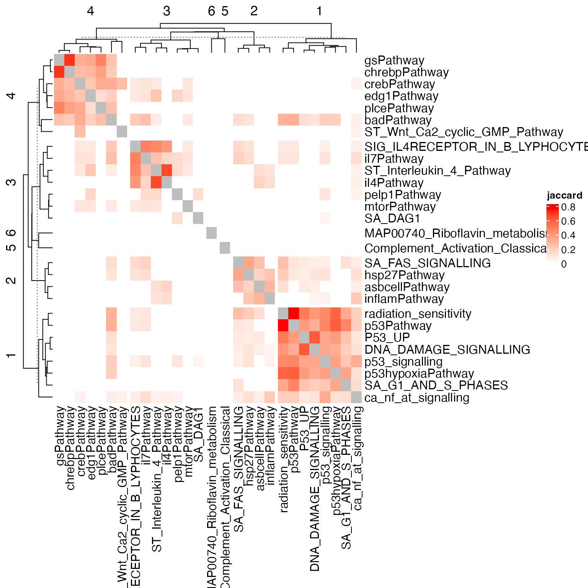
Clustering the gene sets is fairly easy. However, this is not the end of the analysis. We need to summarize the commonness of genesets in a cluster. Note the similarity is count-based, then these genesets must share some common genes, i.e., the driving genes that cluster the genesets.
Taking the geneset cluster 1 as an example, which is related to “P53”-related functions.
gs2[cl == 1]## $P53_UP
## [1] "BAX" "BBC3" "BTG2" "CDKN1A" "DDB2" "MDM2" "NINJ1"
## [8] "PLK3" "TNFRSF6"
##
## $SA_G1_AND_S_PHASES
## [1] "CDK2" "CFL1" "MDM2" "ARF3" "CDKN1A"
##
## $p53Pathway
## [1] "BCL2" "CDK2" "MDM2" "BAX" "CDKN1A"
##
## $p53hypoxiaPathway
## [1] "HIC1" "CPB2" "MDM2" "BAX" "CDKN1A"
##
## $DNA_DAMAGE_SIGNALLING
## [1] "BTG2" "TNF" "XPC" "MDM2" "RAD1" "TNFRSF6" "BAX"
## [8] "BBC3" "FOXO3A" "TNFRSF4" "CDKN1A" "PPM1D" "DDB2"
##
## $p53_signalling
## [1] "RELA" "MAP2K7" "TNF" "EP300" "TP53AP1" "BCL2" "MDM2"
## [8] "PML" "ESR1" "BAX" "BBC3" "CDKN1A"
##
## $radiation_sensitivity
## [1] "BAX" "BCL2" "CDKN1A" "MDM2" "TNFRSF6"
##
## $ca_nf_at_signalling
## [1] "RELA" "MAP2K7" "TNF" "EP300" "NFATC1" "IL4" "MEF2D" "BCL2"
## [9] "P2RX7" "IFNA1" "CAMK2B" "CDKN1A"Let’s calculate the recurrency of genes in these gene sets:
##
## CDKN1A MDM2 BAX BCL2 BBC3 TNF TNFRSF6 BTG2 CDK2 DDB2
## 8 7 6 4 3 3 3 2 2 2
## EP300 MAP2K7 RELA ARF3 CAMK2B CFL1 CPB2 ESR1 FOXO3A HIC1
## 2 2 2 1 1 1 1 1 1 1
## IFNA1 IL4 MEF2D NFATC1 NINJ1 P2RX7 PLK3 PML PPM1D RAD1
## 1 1 1 1 1 1 1 1 1 1
## TNFRSF4 TP53AP1 XPC
## 1 1 1We can see “CDKN1A” is in all 8 genesets, “MDM2” is in 7 out of 8 gene sets, and “BAX” is in 6 out of 8 gene sets. So these three genes are driving genes of the eight genesets in this cluster.
For the visualization purpose, can we add such driving genes to the heatmap?
Let’s first adjust the heatmap:
ht = Heatmap(sm, name = "jaccard", col = c("white", "red"), border = "black",
row_split = cl, column_split = cl, row_names_side = "left",
show_row_dend = FALSE, show_column_dend = FALSE, row_title = NULL, column_title = NULL)Driving genes are added as a “link” annotation:
ht + rowAnnotation(gene = anno_link(cl, panel_fun = function(index) {
tb = table(unlist(gs2[index]))
tb = sort(tb, decreasing = TRUE)
pushViewport(viewport())
grid.rect()
grid.text(paste(names(tb)[tb/length(index) > 0.5], collapse = "\n"))
popViewport()
}))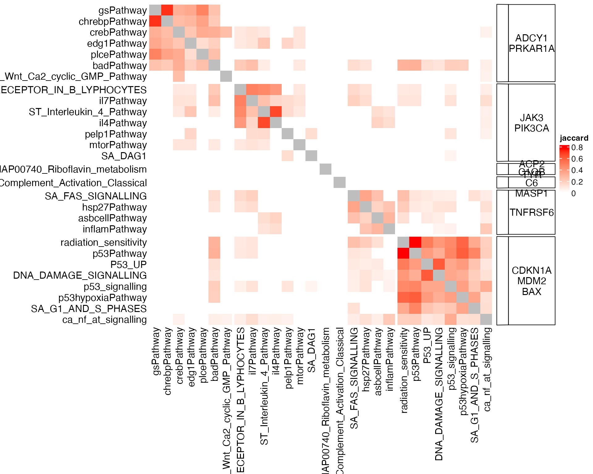
In the GSEAtopics package, there is a
genesets_similarity_heatmap() function.
genesets_similarity_heatmap(gs2, weight = w)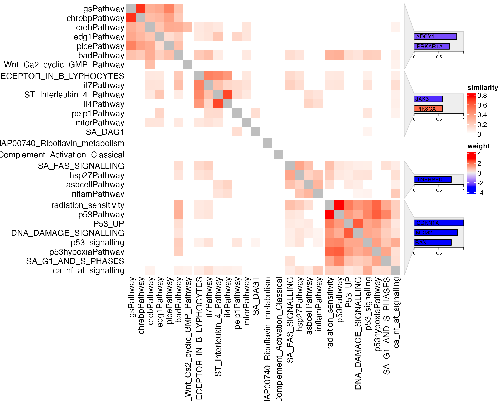
Question: in the previous example, the enrichment is done by ORA which is based on gene counts. The similarity is also based on gene counts. What if the enrichment is done by GSEA? How to adjust the calculation process?
We first apply the GSEA analysis.
s = p53_dataset$s2n
tb_gsea = fgsea_wrapper(s, gs)
head(tb_gsea)## gene_set p_value p_adjust log2_p_err es
## 1 P53_UP 1.081506e-05 0.002738176 0.5933255 -0.5986774
## 2 hsp27Pathway 1.113080e-05 0.002738176 0.5933255 -0.7758925
## 3 GPCRs_Class_A_Rhodopsin-like 2.700012e-05 0.003757188 0.5756103 -0.4299558
## 4 p53Pathway 3.054625e-05 0.003757188 0.5573322 -0.7438596
## 5 UPREG_BY_HOXA9 4.531819e-05 0.004459310 0.5573322 0.5828988
## 6 HTERT_UP 7.091603e-05 0.005815114 0.5384341 0.3709129
## nes n_gs leading_edge
## 1 -2.127459 40 CDKN1A, ....
## 2 -2.194198 15 TNFRSF6,....
## 3 -1.853143 111 NTSR2, A....
## 4 -2.132484 16 CDKN1A, ....
## 5 2.213421 29 YES1, TD....
## 6 1.875231 109 AHR, DR1....The similarity in this category is based on gene counts. Although the enrichment procedure is not gene count-based. In the results, GSEA reports “leading edge genes” which are the genes that contribute most to the enrichment of the gene set. These leading-edge genes can be used for calculating the similarities.
l = tb_gsea$p_adjust < 0.1
gs3 = tb_gsea[l, "leading_edge"]
names(gs3) = tb_gsea$gene_set[l]
genesets_similarity_heatmap(gs3, weight = s, resolution = 1.5)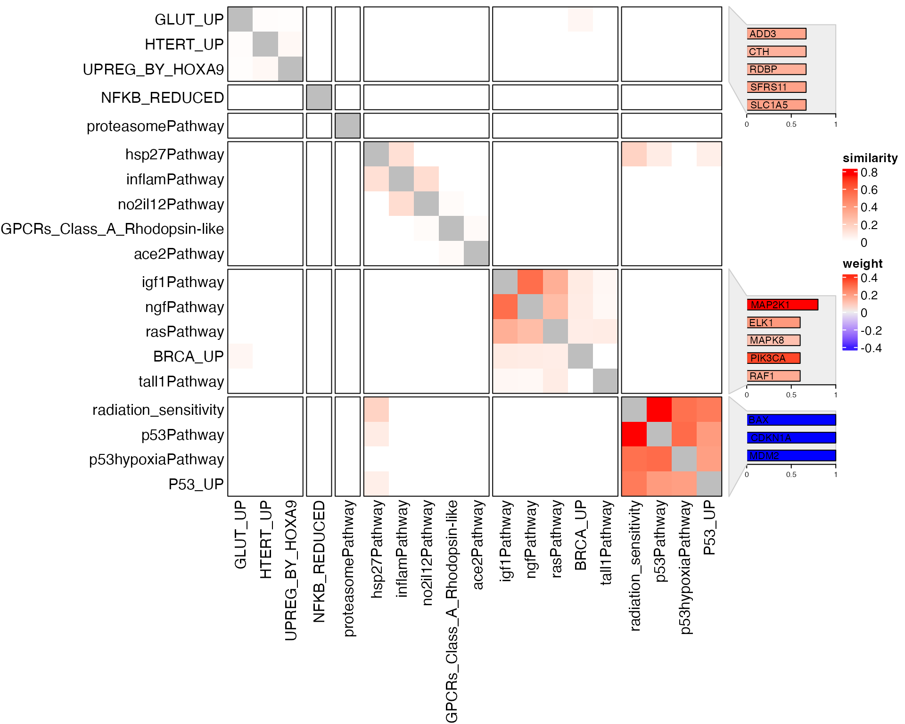
Thoughts: GSVA or the single-sample GSEA converts the original gene-sample matrix to geneset-sample matrix. One the aim of such transformation is to find “co-expressed gene sets”. As such “co-expression” is actually due to common genes in the gene sets, we can also do such driving-gene analysis and associate co-expressed pathways to a group of co-expressed genes.
Semantic similarity
simplifyEnrichment is suggested to work with GO enrichment results.
Let’s generate 500 random GO IDs:
library(simplifyEnrichment)
set.seed(888)
go_id = random_GO(500)
sm = GO_similarity(go_id)The default semantic similarity method is “Sim_XGraSM_2013”, which is an adjusted Lin-1998 method, where is replaced with , i.e. average non-zero IC of all common ancestors.
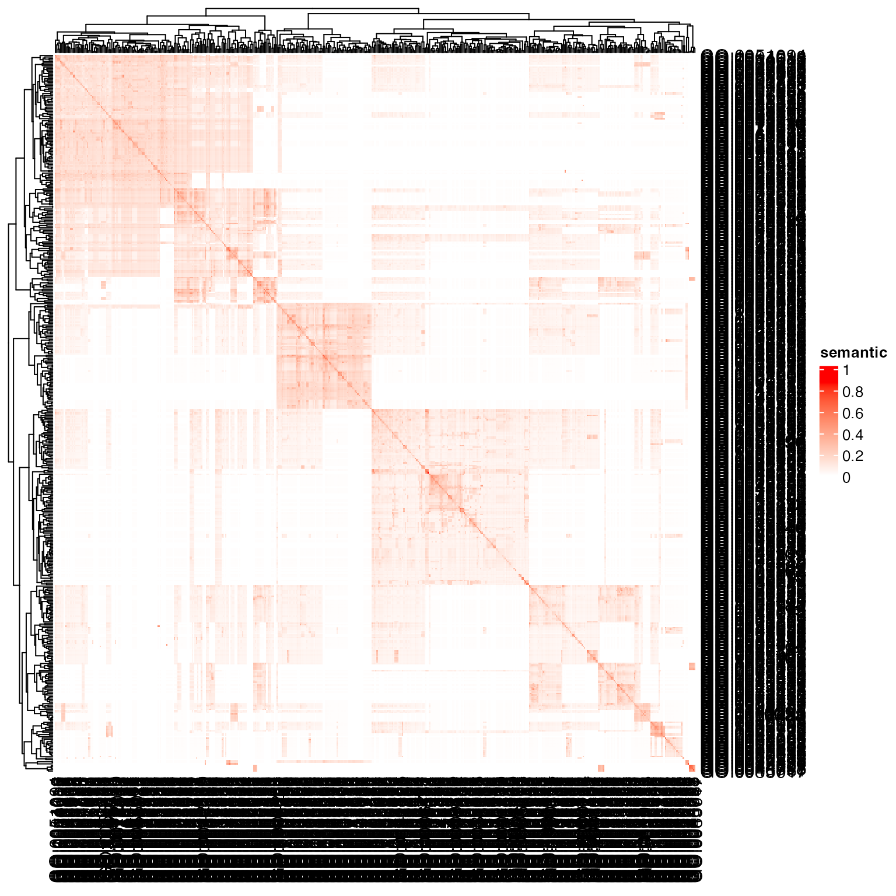
The heatmap shows very clear block patterns on the diagonal. We next try several clustering methods to see whether they can capture such patterns.
We implement a helper function test_clustering() which
accepts a cluster label vector and draws the heatmap.
library(circlize)
test_clustering = function(cl) {
col_fun = colorRamp2(c(0, quantile(sm, 0.99)), c("white", "red"))
Heatmap(sm, name = "semantic", col = col_fun,
border = "black", show_row_names = FALSE, show_column_names = FALSE,
show_row_dend = FALSE, show_column_dend = FALSE,
row_title = NULL, column_title = NULL, row_split = cl, column_split = cl)
}We try hierarchical cluster, k-means, graph-based method and binary cut.
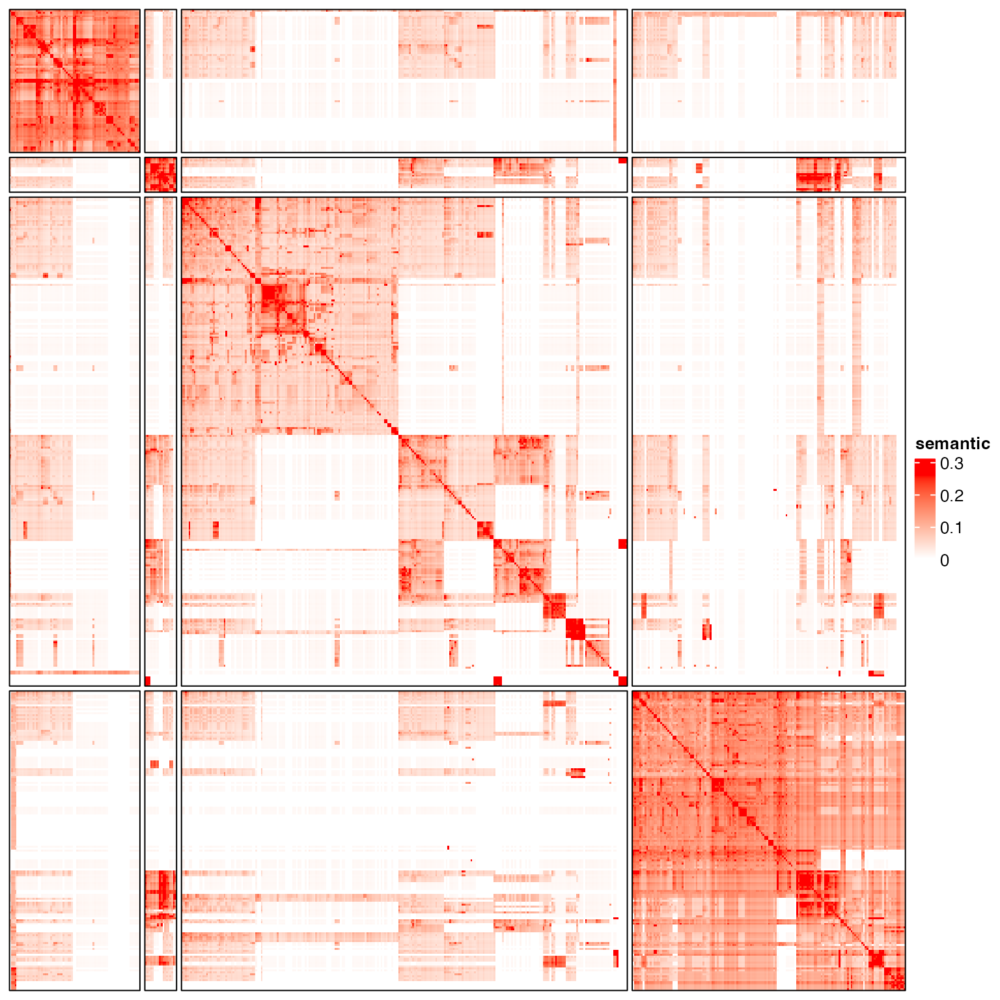
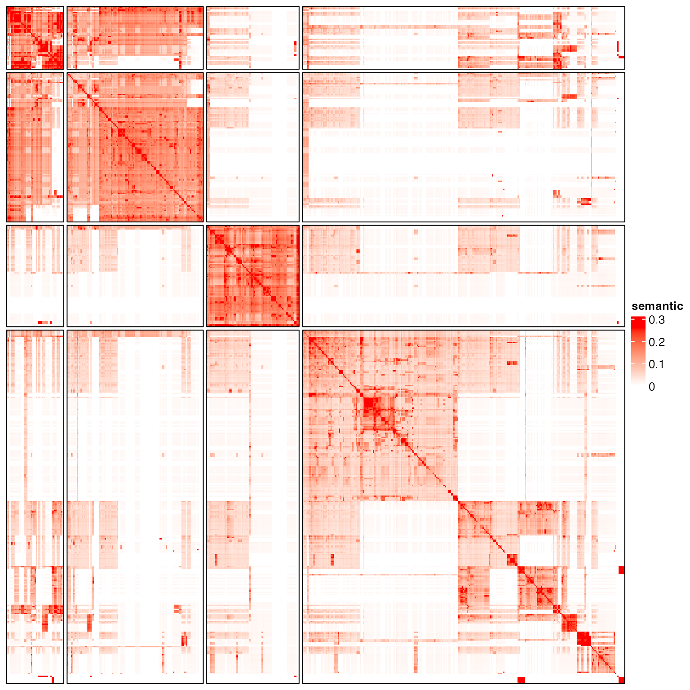
g = graph_from_adjacency_matrix(sm, weighted = TRUE, mode = "upper", diag = FALSE)
cl = membership(cluster_louvain(g))
test_clustering(cl)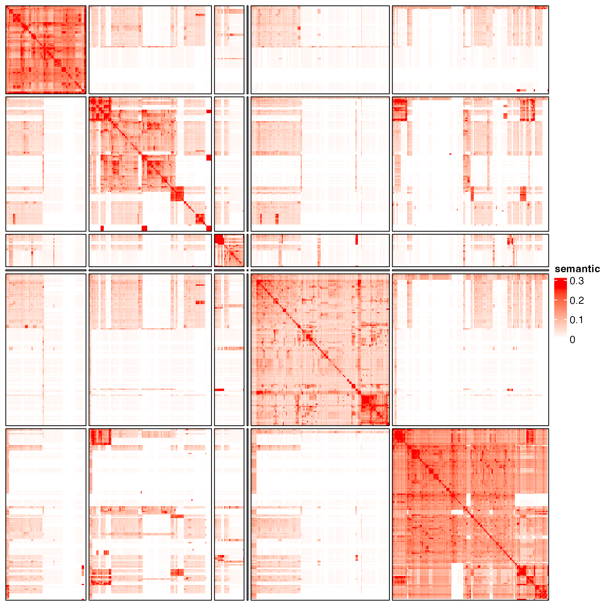
cl = binary_cut(sm)
test_clustering(cl)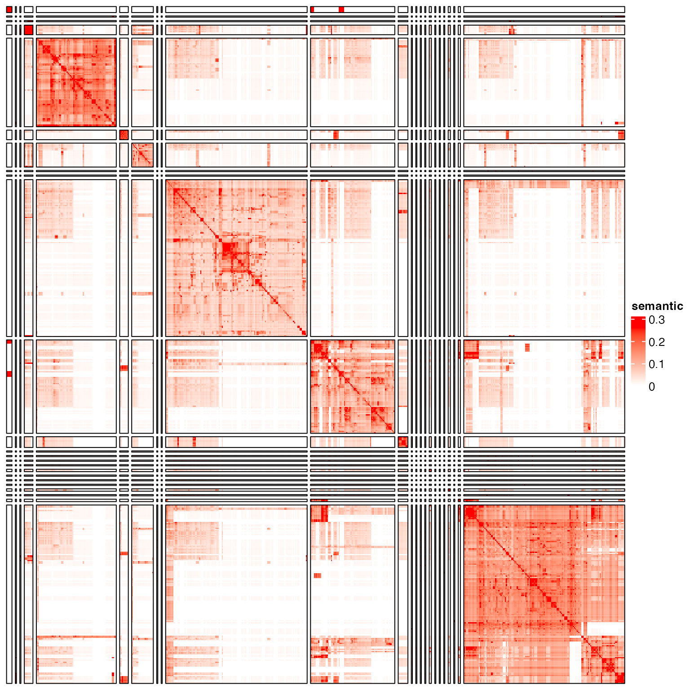
cl = as.character(cl)
tb = table(cl)
cl[cl %in% names(tb[tb < 5])] = "others"
test_clustering(cl)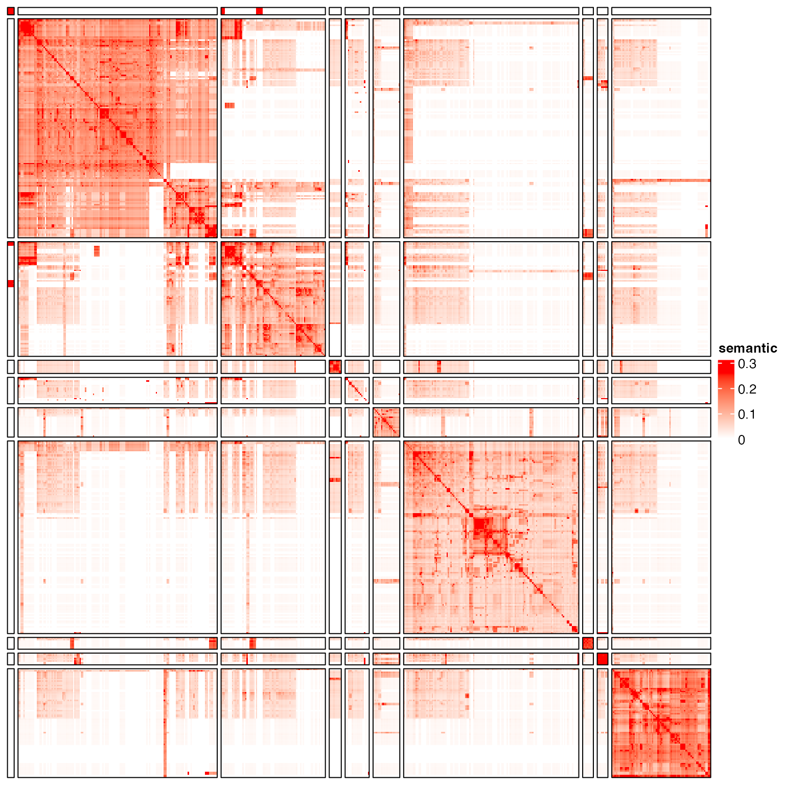
As GO terms in a cluster show high semantic similarities, where they should be concentrated in a certain GO branch. The general biological functions for a GO cluster is summarized by keywords and visualized by word cloud.
simplifyGO(go_id)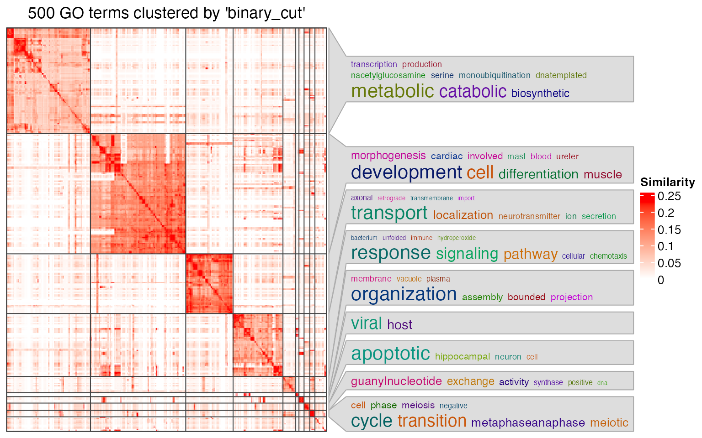
Multiple enrichment results
We follow the standard workflow for unsupervised cluster analysis. We use the Golub ALL dataset and the cola package for analysis.
library(cola)
library(golubEsets)
data(Golub_Merge)
m = exprs(Golub_Merge)
anno = pData(Golub_Merge)
m[m <= 1] = NA
m = log10(m)
m = adjust_matrix(m)
library(preprocessCore)
cn = colnames(m)
rn = rownames(m)
m = normalize.quantiles(m)
colnames(m) = cn
rownames(m) = rn
res = consensus_partition(m, top_value_method = "ATC", partition_method = "skmeans", verbose = FALSE)We know the best number of subgroups is three. We look for signatures in the three-subgroup classification.
df = get_signatures(res, k = 3)## * 71/72 samples (in 3 classes) remain after filtering by silhouette (>= 0.5).
## * cache hash: bc6884118a3de686a9e28200827a1400 (seed 888).
## * calculating row difference between subgroups by Ftest.
## * split rows into 4 groups by k-means clustering.
## * 2080 signatures (50.5%) under fdr < 0.05, group_diff > 0.
## - randomly sample 2000 signatures.
## * making heatmaps for signatures.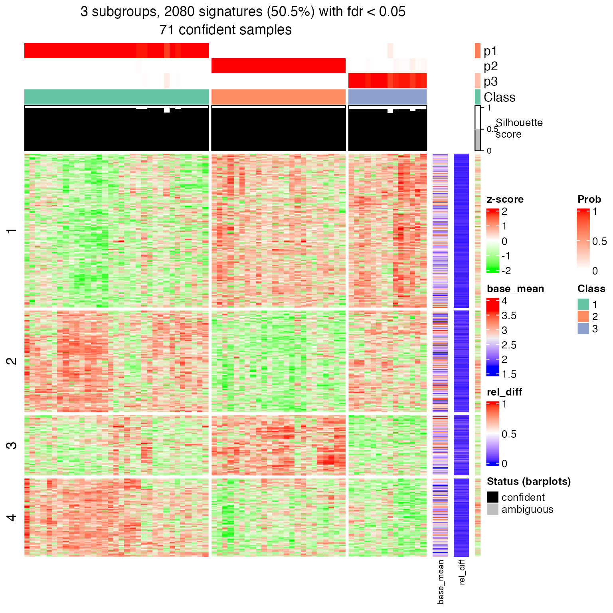
Now we have four groups of signatures genes. The next analysis is to compare enriched GO functions in the four lists of signature genes. The corresponding biological question is do these different signature genes have similar function or they exhibit specific functions?
We first obtain the four list of signature genes.
The ALL data is almost 25 years ago. The gene ID is Affymetric microarray probe ID, Luckily, the corresponding annotation package is also available on Bioconductor which is built upon the standard AnnotationDbi package.
library(hu6800.db)
gl = lapply(gl, function(x) {
x2 = mapIds(hu6800.db, keys = x, keytype = "PROBEID", column = "ENTREZID")
unique(x2[!is.na(x2)])
})We aply ORA GO analysis.
tbl = lapply(gl, ora_go)tbl is a list of four enrichment result tables.
simplifyGOFromMultipleLists() can be used to visualize GO
enrichment from multiple results. The columns for GO IDs and p-values
are automatically detected.
simplifyGOFromMultipleLists(tbl, padj_cutoff = 0.001)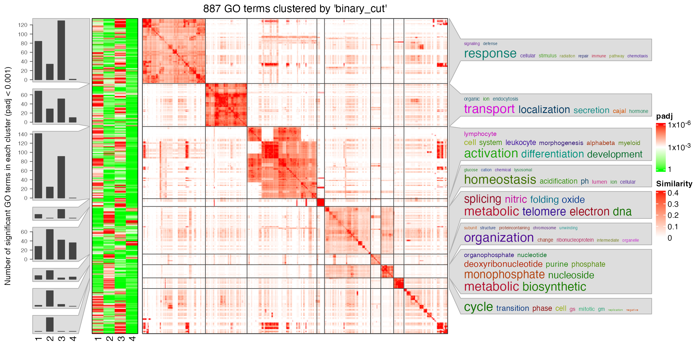
You can see there are around 900 GO terms under the cutoff
p_adjust < 0.001. I suggest to set a cutoff for
padj_cutoff to let the number of GO terms be in
[100, 1000].
Word cloud
In some cases, the similarity heatmap is not necessary to put into the final report.
df = tbl[[1]]
go_id = df$gene_set[df$p_adjust < 0.01]
simplifyGO(go_id)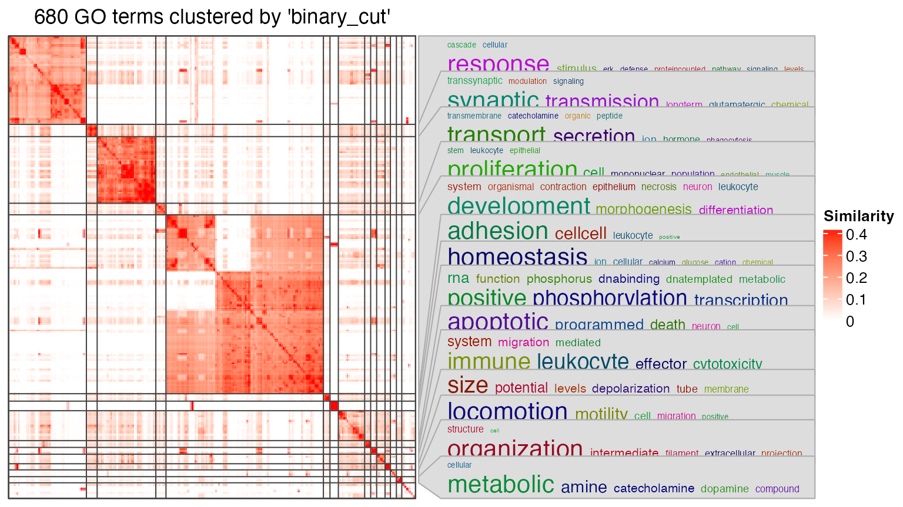
summarizeGO() makes an even simpler plot with word cloud
and simple statistical graphics.
When there is only one enrichment results, there are two inputs for
summarizeGO():
- A vector of GO IDs
- A numeric vector of corresponding statistics which are mapped to barplots.
l = df$p_adjust < 0.01
summarizeGO(df$gene_set[l], -log10(df$p_adjust)[l], axis_label = "average -log10(p.adjust)")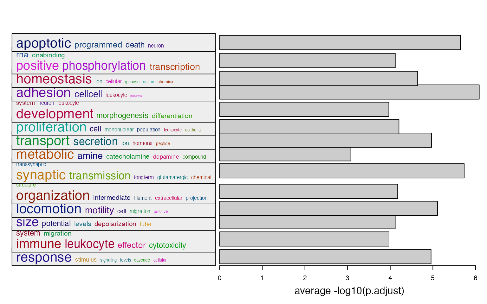
Or visualize average log2 fold enrichment:
l = df$p_adjust < 0.01
summarizeGO(df$gene_set[l], df$log2fe[l], axis_label = "average log2(fold enrichment)")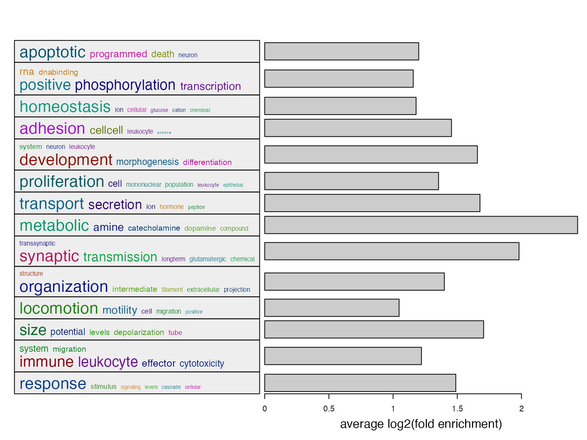
summarizeGO() also supports multiple enrichment results.
In this case, value should be is a list of numeric named
vectors which contains significant GO terms in each enrichment
table.
value = lapply(tbl, function(df) {
v = -log10(df$p_adjust)
names(v) = df$gene_set
v[df$p_adjust < 0.001]
})
str(value)## List of 4
## $ 1: Named num [1:420] 26.2 18.9 18.2 15.9 15.7 ...
## ..- attr(*, "names")= chr [1:420] "GO:1901700" "GO:0007267" "GO:1901701" "GO:0033993" ...
## $ 2: Named num [1:262] 27.4 20.3 18 16.7 16.5 ...
## ..- attr(*, "names")= chr [1:262] "GO:0006259" "GO:0006974" "GO:0006281" "GO:1903047" ...
## $ 3: Named num [1:423] 21.8 20.2 19.9 19.9 19.2 ...
## ..- attr(*, "names")= chr [1:423] "GO:0044419" "GO:0009607" "GO:0051707" "GO:0043207" ...
## $ 4: Named num [1:52] 13.9 13.7 13.7 12.9 11.8 ...
## ..- attr(*, "names")= chr [1:52] "GO:0000375" "GO:0000377" "GO:0000398" "GO:0008380" ...
summarizeGO(value = value, axis_label = "average -log10(p_adjust)",
legend_title = "-log10(p_adjust)")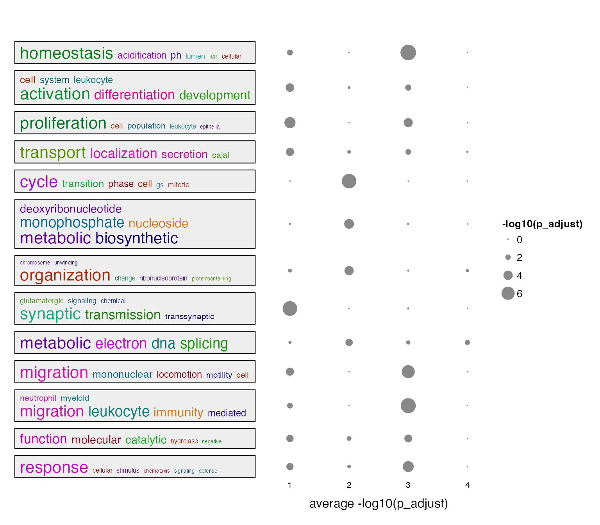
Or use log2 fold enrichment:
value = lapply(tbl, function(df) {
v = df$log2fe
names(v) = df$gene_set
v[df$p_adjust < 0.001]
})
summarizeGO(value = value, axis_label = "average log2_fold_enrichment",
legend_title = "log2(fold_enrichment)")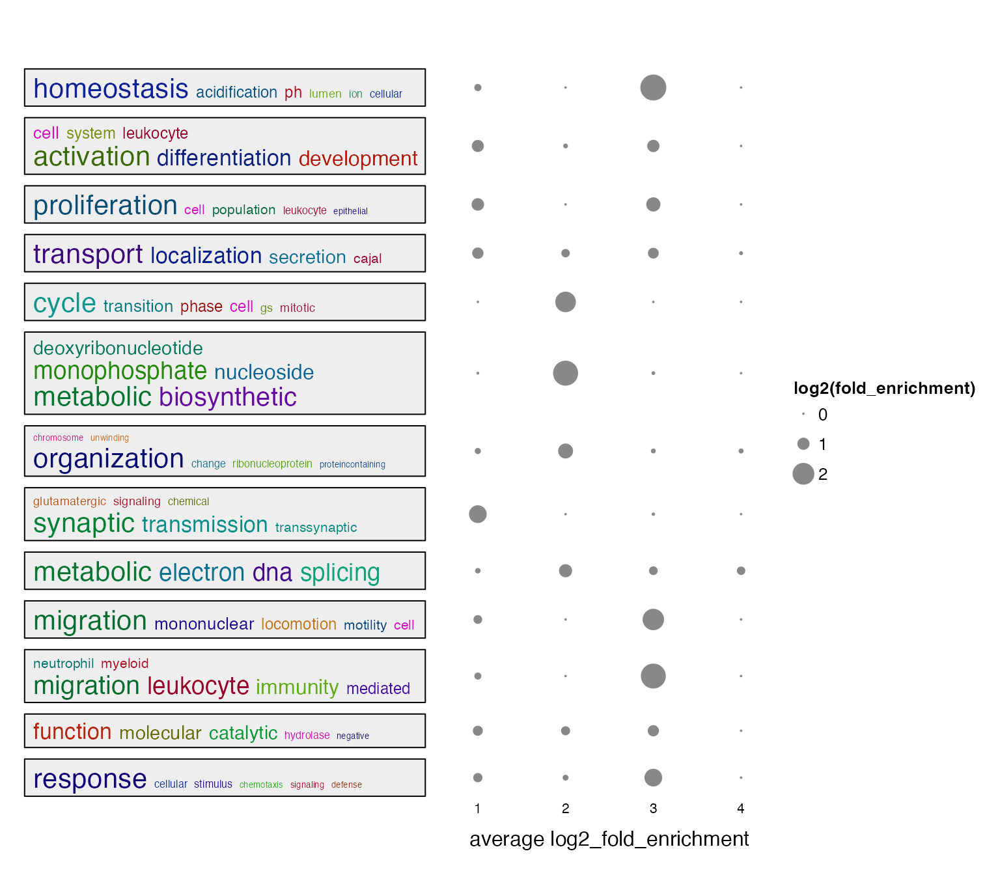
Practice
Practice 1
Recall in Topic 2-02: Implement ORA from stratch, we compared the ORA results when setting DE cutoffs to 0.05, 0.01 and 0.001. Now perform a simplify enrichment analysis on the three ORA tables and compare them.
de = readRDS(system.file("extdata", "de.rds", package = "GSEAtopics"))
de = de[, c("symbol", "p_value")]
de = de[!is.na(de$p_value) & de$symbol != "", ]
de_genes_1 = de$symbol[de$p_value < 0.05]
de_genes_2 = de$symbol[de$p_value < 0.01]
de_genes_3 = de$symbol[de$p_value < 0.001]
library(org.Hs.eg.db)
map = GSEAtopics::map_to_entrez("SYMBOL", org.Hs.eg.db)
de_genes_1 = unique(map[de_genes_1])
de_genes_1 = de_genes_1[!is.na(de_genes_1)]
de_genes_2 = unique(map[de_genes_2])
de_genes_2 = de_genes_2[!is.na(de_genes_2)]
de_genes_3 = unique(map[de_genes_3])
de_genes_3 = de_genes_3[!is.na(de_genes_3)]
library(org.Hs.eg.db)
gs = load_go_genesets(org.Hs.eg.db, "BP")$gs
tb1 = ora(de_genes_1, gs)
tb2 = ora(de_genes_2, gs)
tb3 = ora(de_genes_3, gs)
lt = list(
"DE_0.05" = tb1,
"DE_0.01" = tb2,
"DE_0.001" = tb3
)
simplifyGOFromMultipleLists(lt, padj_cutoff = 0.05)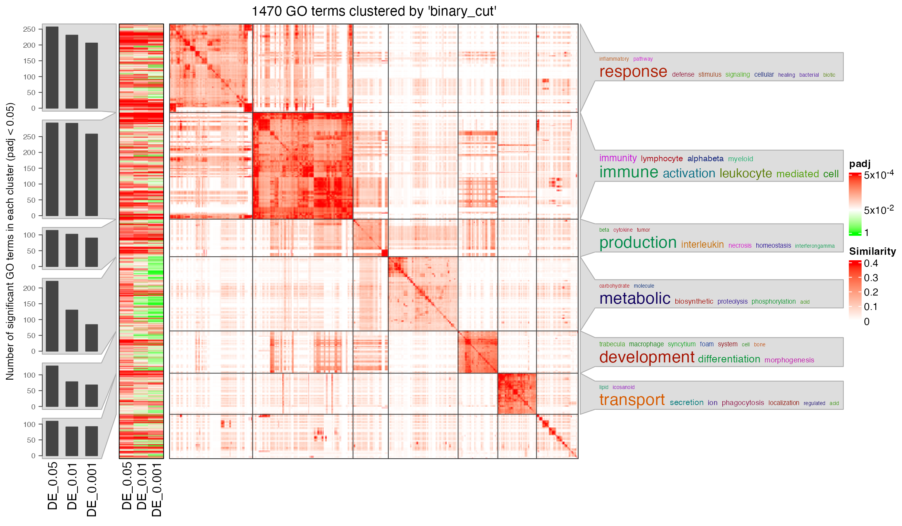
Or taking the average log10 p-values:
value = lapply(lt, function(df) {
v = -log10(df$p_adjust)
names(v) = df$gene_set
v[df$p_adjust < 0.05]
})
summarizeGO(value = value, axis_label = "average -log10(p_adjust)",
legend_title = "-log10(p_adjust)")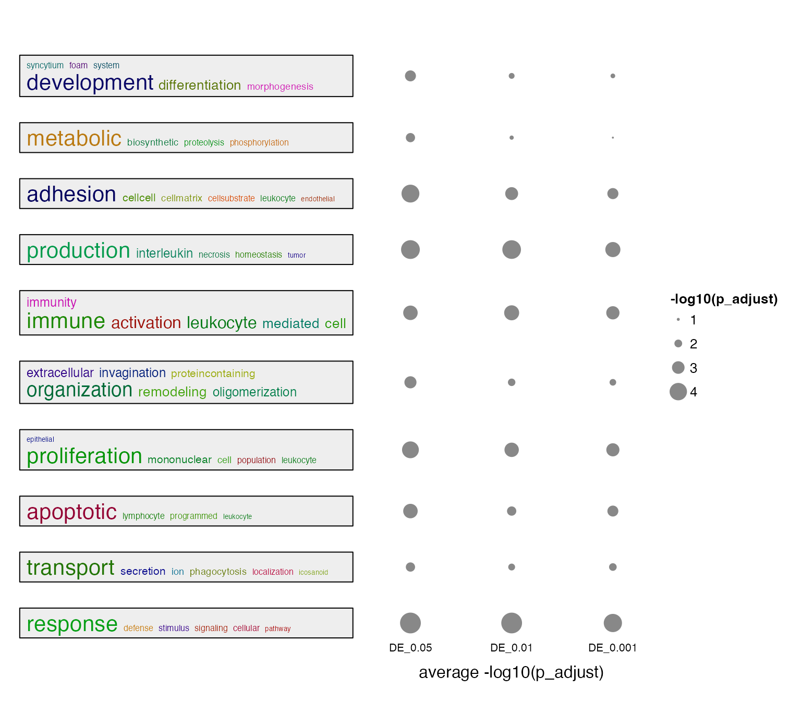